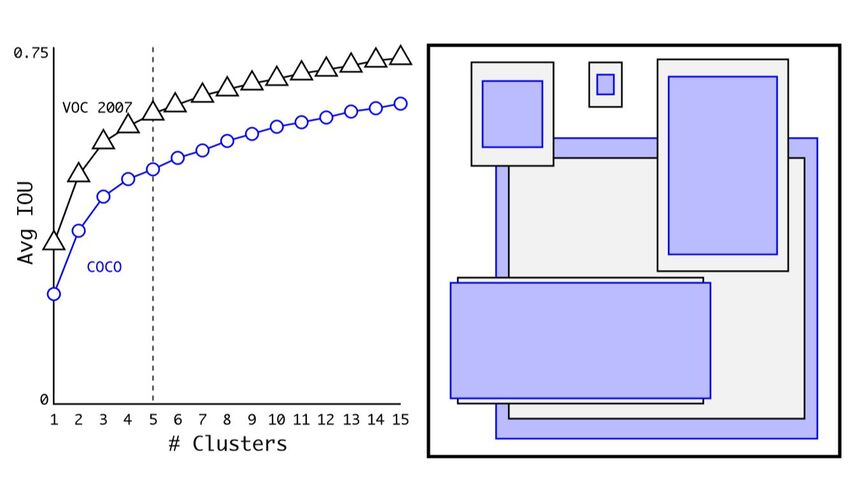
yolov2从网络上讲是很简单的结构,几乎和RPN网络完全一样,但是它集百家之长,增加了很多细节去优化.
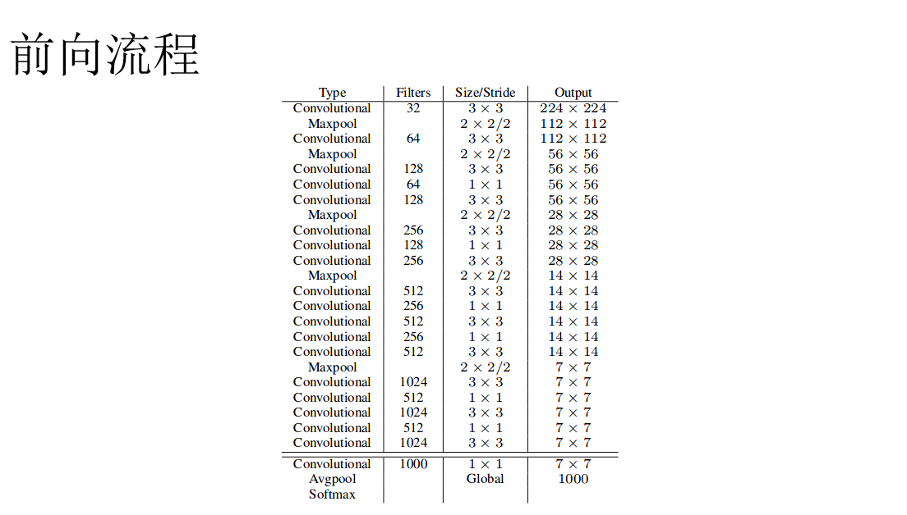
先说一下前传流程,他的网络是作者自创的darknet,全部由卷积层和最大池化层构成,只有池化层是缩放了的,每个池化层步长都是2,一共5个池化层,所以最后会缩小2的5次方,也就是32倍.最后输出是什么呢?这个图上画的是softmax,其实不是的啊,这个softmax是他做pretrain的时候用的,后面就舍弃了,这个我们之后会介绍的.所以它的输出实际上和yolov1是一样的,是一个特征向量,例如预测具有80种分类的coco80上的输出就是13*13*425维的特征,只不过它是卷积出来的,完全没有经历全连接层.13*13代表的是最后那层featuremap是13*13的维度,而每个点预测5种bbox,每个bbox是80个类别的置信度+4个坐标(x,y,w,h)四个数,再加一个是物体的概率.这里和YOLOv1一样的,把是不是物体这个概率单独拿了出来,其实反过来想就相当于是背景的概率了.所以80个类别那每个bbox就预测85个值,每个点5个bbox就是5*85=425了.因为没有了全连接层了,所以其实YOLOv2理论上是可以支持任意大小的图的,也就是说最后那层featuremap不一定限制成立13*13,具体大小也就是你图宽高分别/32以后的值.
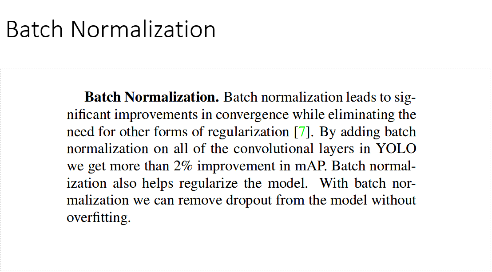
然后再说说它具体优点,他的优点分为3个方向,效果,速度和鲁棒性,我们先说效果方面,第一个是添加了batchnorm,提高了大概2%的map,并且有了batchnorm,可以移除dropout并且不用担心过拟合了.
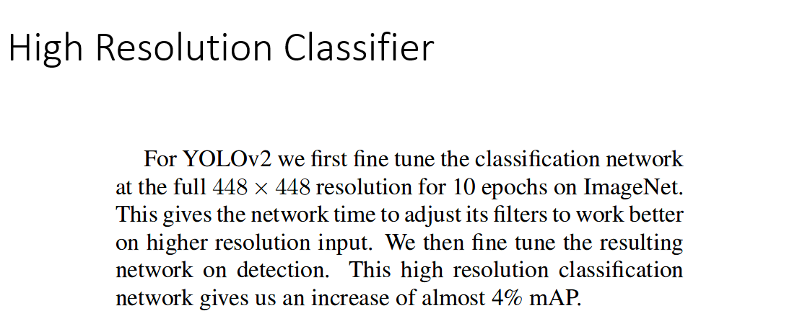
第二个是高分辨率,YOLO V1在训练分类的时候用的是224的分辨率,训练检测的时候把他扩充到了448,而现在用448的又finetune了一下分类网络,map又提升了4%.
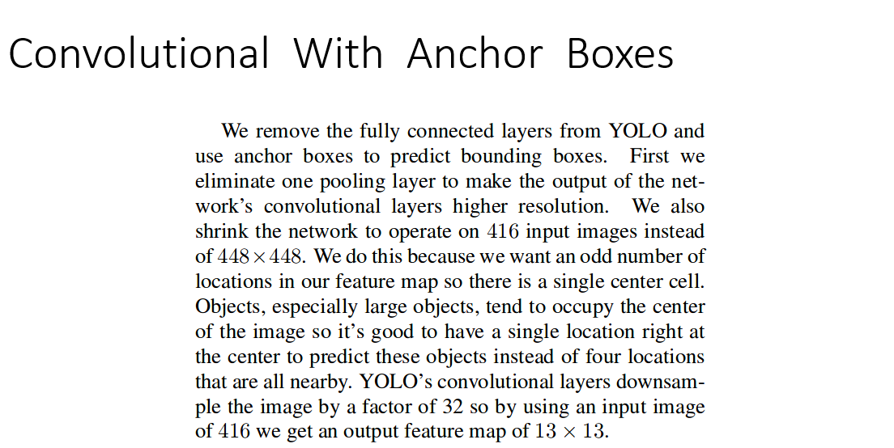
第三个是加了anchor,把YOLO里的全连接层删掉了,然后把网络输入又修改成了416的,目的是卷积到最后能够得到一个奇数,以保证每个最后输出的featuremap有一个中心.网络总共缩放了32倍,所以416/32是13,刚好有个中心点,其实真正训练的时候并没有严格遵循奇数原则,实际测试的时候更是支持任意尺度的,比方说它最新的代码里输入就是608的,那么最后输出的就是19.yolov1最终输出的是7*7的featuremap,每个点输出两个bbox,所以一共也就98个可能,而用了anchor之后每个点有5种不同的bbox了,那么总共就有了13*13*5=845个可能了,这样虽然准确率下降了一点点,从69.5降到了69.2,但是召回率大大的提高了,从81%提高到了88%.
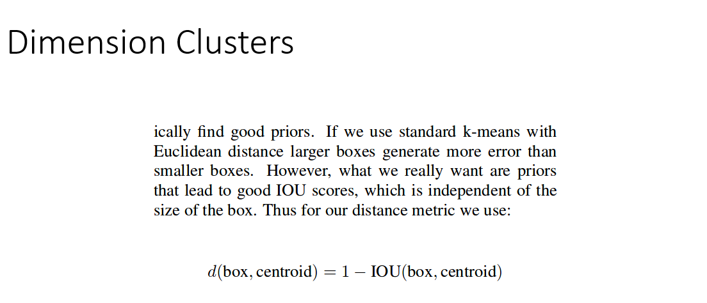
第四个是这些anchor不再是纯自动学习出来的了,而是人为制定的了.虽然训练出来的网络最后也会微调这个框的位置,但是如果我们在初始化的时候就让这个框更好一点那么结果也会更好一点,所以我们就从训练图片中聚类出来这5个尺度.但是聚类有一个问题,就是假设用欧氏距离的kmeans的话,那么尺寸越大的框他的误差也就越大,所以就用IOU来替代欧氏距离的误差了.
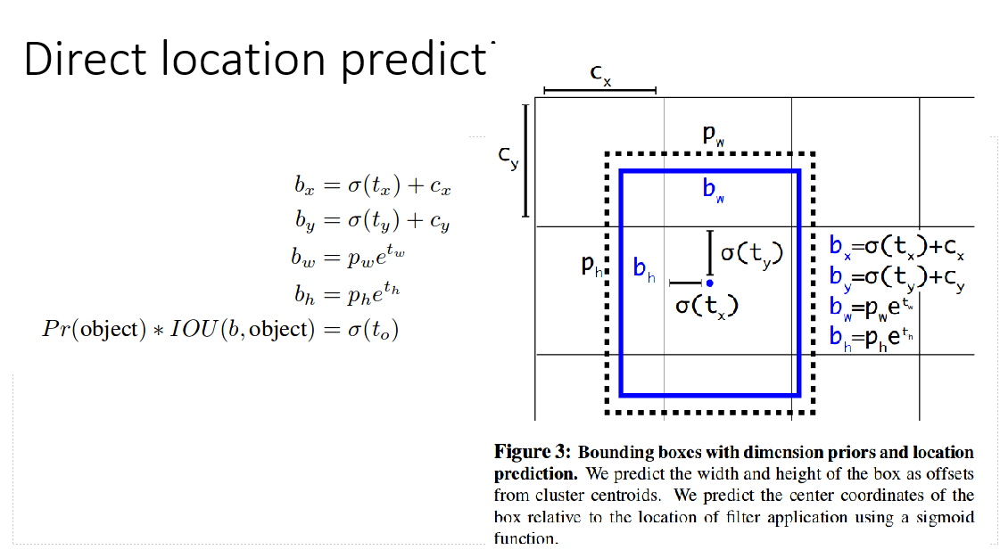
第五个是anchor位置预测的技巧,RPN网络是直接回归出相对于全图的中心点x和y,这样的话可能会乱跳,比方说物体在图中心,那么所有的x和y都指向那里了,很不利于收敛.现在它做的改进就是把deltax和deltay都加了一层sigmoid,这样把他们限制在0-1之间了,这样就出不了一个当前的网格了,这样网络更加稳定了,提升了几乎5个百分点.
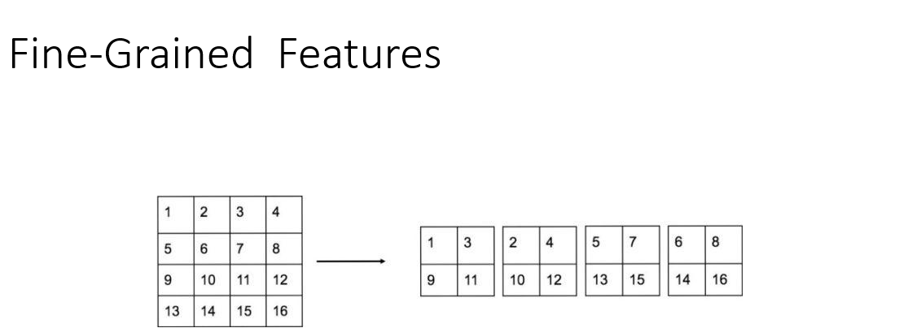
第六个是精细化的特征提取,这里其实是说最后那层featuremap太小了,可能提取的不够精细,像SSD都知道从之前层里的featuremap提取边框信息,那么我们也这样做试试,所以就把最后一个池化之前的那个featuremap提取出来,衔接到之后一层,就像resnet那样连接过去,但是尺度不一样,所以做了一次reshape,简单说由于这层featuremap是下一层的两倍大小,所以每4个格子对应下面一层的一个格子,那就干脆把这4个变成通道数,这样出来的featuremap就和后面的大小一样了.这一层叫做paththrough,比方说本来是26*26*512的featuremap,把他reshape到13*13*2048,然后就可以和后面那一层13*13*1024的输出合并了,变成13*13*3072的输出了.这一步也提高了1%的准确率.
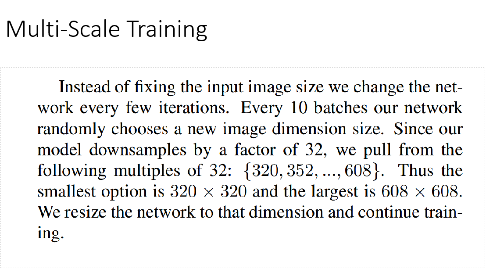
第七个是YOLOv2最大的创新,他用了多种尺度的图去训练,其实这点yolov1也干过,不过v2更方便了,因为它没有了全连接层,输入想怎么变就怎么变了.只要保证是32的倍数就行了,所以从最小最大608的公倍数都试了一遍,这里很搞笑,他也不再关注输出是不是奇数了,所以那句建议真正落实起来还是挺困难的.
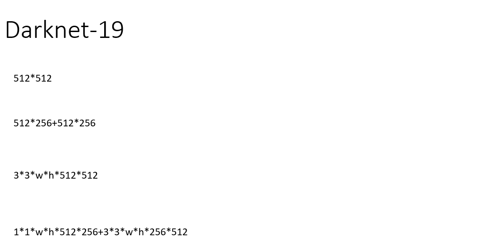
接着再说速度方面的改进,网络基本沿袭了VGG的架构,但是比VGG要略小,所以速度更快.VGG所有卷积全是3*3的,而darknet加入了1*1的过度层,有人说他减少了参数,实际上并没有,因为它的过渡层维度有原先维度的一半,假设原先是512维变成512维,那么计算有512*512这么多倍,而中间加上一个256的1*1卷积,这样总共计算就有512*256+512*256,最后结果竟然是一样的,所以他的作用并不是减少了参数,而是减小了计算量,因为原来计算量是3*3*w*h*512*512,而现在卷积核是1*1的了,也就是1*1*w*h*512*256+3*3*w*h*256*512,计算量还是小了一半的,而且因为多了一层而增加了非线性.另外还有batchnorm也能够加速收敛.
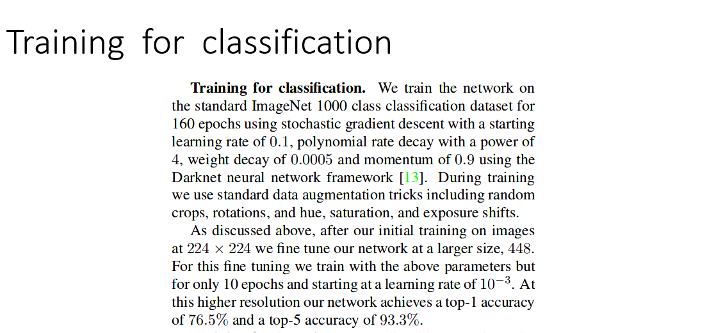
网络先在imagenet上训练了160次分类器,其实主要就是学习提取特征的能力.并且这个准确率还是相当可以的,1000个分类准确率就能达到76.5
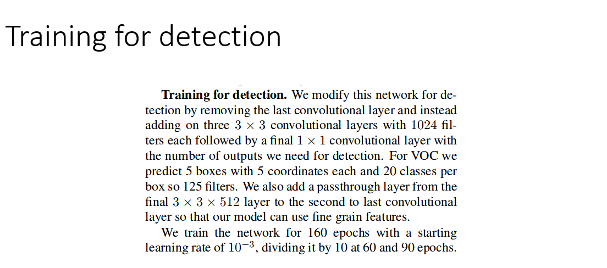
然后训练检测器,删掉最后一层卷积层,又添加3个3*3的卷积层,就变成之前看到的darknet的样子.
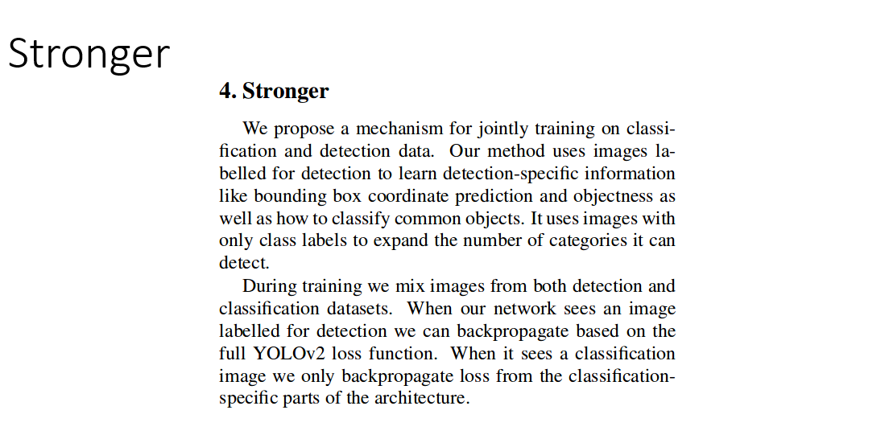
最后一个优点是健壮性,刚才我们看到他在训练的时候是把检测和分类分开的,这就是他健壮性所在,如果只有检测数据它就只回归检测的参数,如果只有分类数据就只回归分类的参数.双方互不干扰.
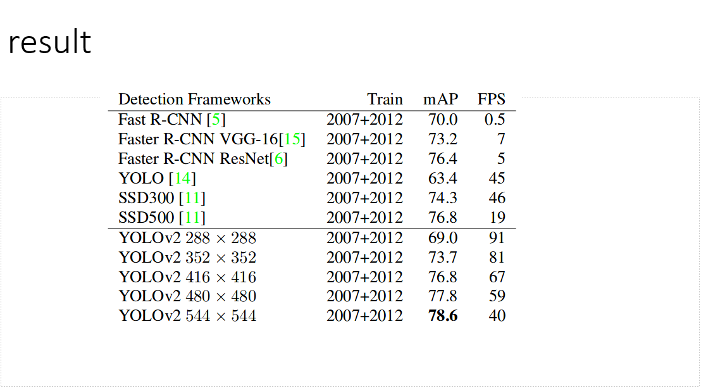
我们来看看结果,用288的图做输入,效果几乎赶上了fastrcnn,而速度达到了90帧.其实论文到这里还没有结束,论文提出了一个非常好的问题,就是子类的问题,比方说哈士奇,田园犬都属于狗,所以在大类别的时候把他们分得太开反而会造成网络不容易收敛,后面介绍了怎么去区分子类,解决了这个问题,这个网络就可以区分9000种类别了.之后在介绍YOLO9000的时候我们会详细的介绍这一点.好,YOLOv2我们就介绍到这里了,谢谢大家.
Author：keefe
原文链接：http://blog.357573.com/2020/01/05/%E7%9B%AE%E6%A0%87%E6%A3%80%E6%B5%8B-YOLOv2/
发表日期：January 5th 2020, 10:01:45 pm
更新日期：January 6th 2020, 8:46:41 am
版权声明：本文采用知识共享署名-非商业性使用 4.0 国际许可协议进行许可
-
Next Postlinux运维-apt锁问题
-
Previous Post目标检测-YOLO